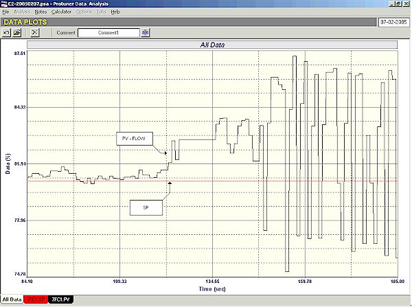
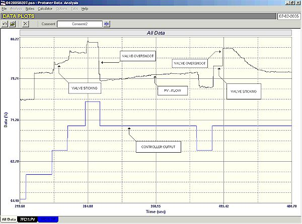
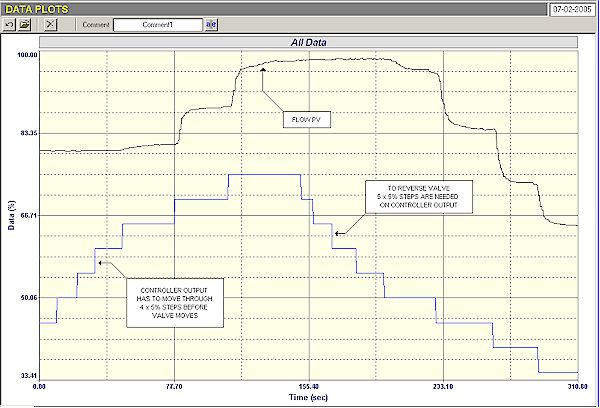
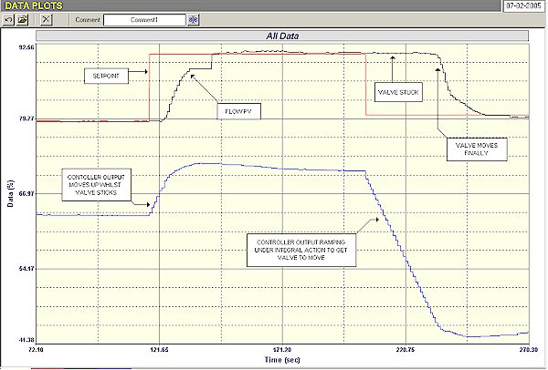

|
| [Home] [About us] [Contact us] [Training] [Optimisation services] [Protuner] |
| [Loop signatures] [Case histories] [Continuous loop performance monitoring] |
|
Control Loop Case History 87 Problems beyond belief! As mentioned several times previously in this series of articles, the biggest and most frustrating problem I encounter in the field of optimisation of regulatory control loops, is the almost blind refusal of people to recognise that the vast majority of control loops in their plant are almost certainly not working efficiently and that a huge number of problems in the loops are sure to exist of which they are generally completely unaware. This applies particularly not only to senior management, but also to many senior control engineers who seem to be under the impression that most of the so called "base layer" loops are working reasonable well, and that optimisation is merely tuning, and that most problems can be fixed by tuning. Furthermore they also often seem to believe that optimisation is a simple exercise that does not require highly skilled people. I have now carried out optimisation exercises in well over 500 plants in quite a few countries around the world, and have never yet been in a plant where on my initial inspection, more than 5% of the loops are operating reasonably well. Many of these plants are considered to be industrial leaders in their fields of manufacture, and it is not as if they don't have the resources or access to skilled personnel if they want to use them. They have control systems costing millions of Rands, Dollars, Pounds or Euros, which are largely there for automatic loop control, but don't really seem at all interested in getting them to work properly. Apart from that, the loss of potential profits is surely mid-boggling. In many plants today the emphasis is on implementation of advanced control strategies. The vast majority of advanced control systems' operation depend on the advanced control system setting the setpoints of simple PID controllers in the base layer. So how can advanced control work properly if the base layer is not doing a proper job? Often I am told that the advanced control vendors do usually come in and optimise the base layer before commissioning the advanced system. The people who are sent in by the advanced control vendors are mostly young, often highly qualified engineers. Unfortunately they generally have very little real plant experience, and have very little knowledge, understanding or training in the practicalities of optimisation, and they go quickly around the plant readjusting PID parameter settings, and in actuality achieving very little. I have been into quite a few plants where these so called experts have performed such "optimisation", and have found that generally the base controls are not working any better after the exercise than they did before. Also typically you find that very little time has been allocated to the base layer optimisation exercise. In one plant with over 600 control loops which I was recently in, only 10 working days had been allowed for base layer optimisation. In general on really fast loops like flow and small capacity levels, one does extremely well if you can optimise between 10 and 15 loops in a day. When it comes to slow processes like many temperature loops, you may be lucky to optimise two loops in a day. A large processing plant with many thousand of loops embarked on a proper major optimisation exercise a little over a year ago. They have established a special department to perform optimising and implement advanced control. (They firstly identified loops with major problems on them by employing a continuous loop performance monitoring package). To date they say they have optimised 250 loops in just under 6 months, and have achieved unbelievable financial benefits just from optimising those relatively few loops. They tell me it will take them years to really get the whole plant control system properly optimised. To give an example of the normal approach to optimisation by many control managers, a large chemical plant in Europe asked me to tender for a loop tuning packet. They had attached a specification. The person who had written it had obviously little experience of optimisation, and had collected information from as many manufacturers of loop tuning packets that he could find. He had then taken what he felt were the best points, and had then drafted the specification. Typically it called for at least five different tuning calculation methods after a test. The author didn't appear to appreciate that if a tuning is done properly for a particular desired speed of response, then only one set of parameters can be correct if you want pole cancellation tuning which is universally accepted as the most effective tuning. The reason why many tuning packages offer several types of tunings is that they employ "SWAG" tuning methods, none of which work very well, and most certainly cannot cope with more complex dynamics. Therefore the manufacturer of the tuning package gives you several methods to try, hoping one may work better than the others on a particular loop. (Refer to chapter 23 of my CD "Basic Trouble Shooting and Loop Tuning" for a description of SWAG tuning methods). Then in the specification for the loop tuning package, there was a requirement that the package should give different speed of tuning responses with a comparison against expected increase in valve life with less aggressive tunings (a feature that one manufacturer offers). This is all well in theory and in fact in practice, as there is a more or less a directly proportional relationship of valve wear to speed of response of tuning. However in reality this is just one of the many factors one should take into consideration for all tunings, and it would be far more realistic to take it into account in conjunction with the amount and frequency of changes in control error that will occur on that particular loop. For example on very noisy level loops where one would expect to have much higher proportional controller gains, and if one would like to avoid filtering, then you may well wish to use a slower tune to avoid shortening the valve life. However the tuning response speed must be chosen with many other factors in mind besides the effect on valve life. (Again refer to chapter 28 of the above referenced CD). Apart from that the specification only asked for tuning. It had nothing covering loop analysis, which in fact is probably even more important than the tuning, for as I have said many, many times, tuning is generally a complete waste of time without first carrying out proper loop analysis. Tuning blindly as an exercise by itself may be successful in roughly only 50% of all cases – if you are really very lucky. To cut a long story short, I then contacted the chief control engineer at the plant, and told him of my experiences and concerns, and suggested he read some of the Case Histories articles on my web site, to get some better understanding of what I was trying to tell him. I then offered, as is my practice in similar cases, to spend a couple of days on his plant free of charge, and provided he paid my travelling and living expenses, to carry out a very preliminary loop audit of a few of the faster loops in the plant to get some idea of how well his base layer was performing. Very often in such a situation people ask me to work on real problem loops which they are aware of and cannot fix. However difficult loops like this may take days to sort out and may in fact not be controllable at all. What I would rather do on such an exercise, is to optimise as many fast simple loops in the short time available, and then see how many were in fact working well. I usually find that very few, if any, are working well. My question to the client is then if simple loops like this, which he previously thought were fine, are in fact not working properly, then what chance is there that more difficult loops could be operating well? This client took me up on my offer, and I visited the site to perform the audit. I looked at about 20 relatively fast and simple loops in the 2 days. As previously expected none were operating well. However what was more shocking was the fact that most were not even capable of being optimised. This was due to various reasons ranging from loop design errors, poor control strategies, and even more worrying was the fact that most of the valves were in a terrible state of repair. Given below are the findings on three of the loops taken at random from the audit. The first example was a flow loop which everyone thought was a good example of a simple loop that really operated well. I always ask for drawings like P&ID's showing how the loop fits into the system. In this case I was told that I didn't need any drawings, as it really was so simple. It consisted of a liquid being pumped out of a tank with a flow meter and control valve downstream and then the flow was discharged straight into another vessel. What could be simpler than this? Immediately on commencing with the first closed loop "as found" test (i.e. using the existing tuning), it was found things didn't work properly. Very little occurred on setpoint changes. We then went out into the field to inspect the valve and found that it had a manual bypass valve around it, which was wide open. This was closed and the test restarted. The control seemed to work reasonably well for a while although very detuned so it responded extremely slowly to any changes. The suddenly the flow started drifting away from setpoint and then the loop went into a completely unstable cycle. This is shown in Figure 1.  Figure 1 Another trip into the field and when walking along the pipe it was found a second control valve was in series with the first and it formed part of a second control loop for something else, the reason for which nobody could explain. The operators had obviously opened the bypass on the first valve to prevent it interfering with the second control. This is an excellent example of a loop that everyone was sure was really operating well. Try and put advanced control on that one! The next example was another supposedly "working well" flow loop. Once again the first thing discovered was that its bypass valve was wide open. (Operators were really getting cunning in the plant. The best way to get rid of pesky control problems is to control using the bypass. Even better than switching to manual). There was very poor and intermittent response in automatic. Figure 2 shows the open loop test.  Figure 2 It can be seen how sticky the valve was. However, much worse, there was a huge overshoot every time the valve was reversed. Huge overshoots on valve reversals put a complete block on any form of reasonable control in automatic, as it will lead to cycling. There is no way this loop could be made to perform until the valve is repaired or replaced. The third example again illustrates a very bad valve which had a massive 21% hysteresis. (Normal hysteresis should be less than 1% for good control). The valve was also twice oversized.. Figure 3 is the open loop test showing how much the controller output had to move before the valve could get through the hysteresis.  Figure 3 Figure 4 is a closed loop test (with good tuning) showing the same thing, but it also shows very nicely how it takes a long time to reverse a valve with bad hysteresis.  Figure 4 This is performed by the integral action. With the normal poor tuning I find in many plants it would have taken close on half an hour to reverse the valve. There were many more examples of problems like these, and also of poor loop design and process problems which were uncovered in the audit. Incidentally as mentioned earlier, not one single loop was found to be operating at all well in automatic, yet the people in the plant believed that all they had to do to get the loops working well was to get a good tuning packet. They had no idea of the problems that existed and in fact originally would not really believe me when I said that such problems were sure to exist in abundance. Once again it is proved that if you wish to get your base loop layer working properly, thorough analysis is required before tuning can be carried out. Michael
Brown is a specialist in control loop optimisation, with many years of
experience in process control instrumentation. His main activities are
consulting, and teaching practical control loop analysis and
optimisation. He gives training courses which can be held in clients'
plants, where students can have the added benefit of practising on live
loops. His work takes him to plants all over South Africa, and also to
other countries. He can be contacted at: |